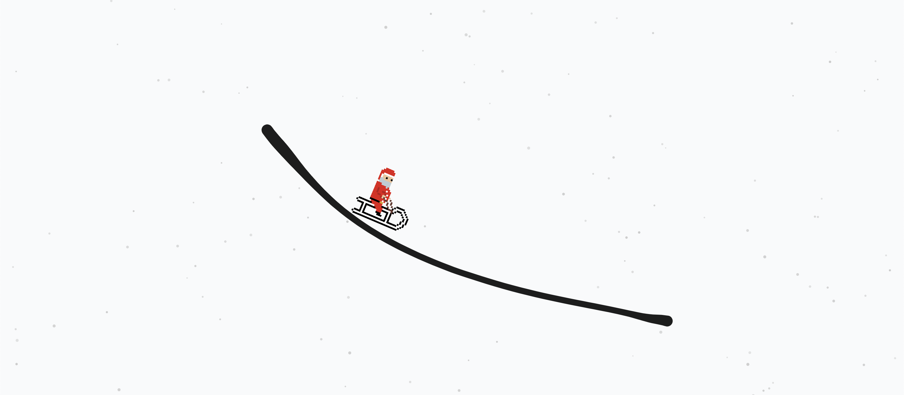
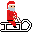
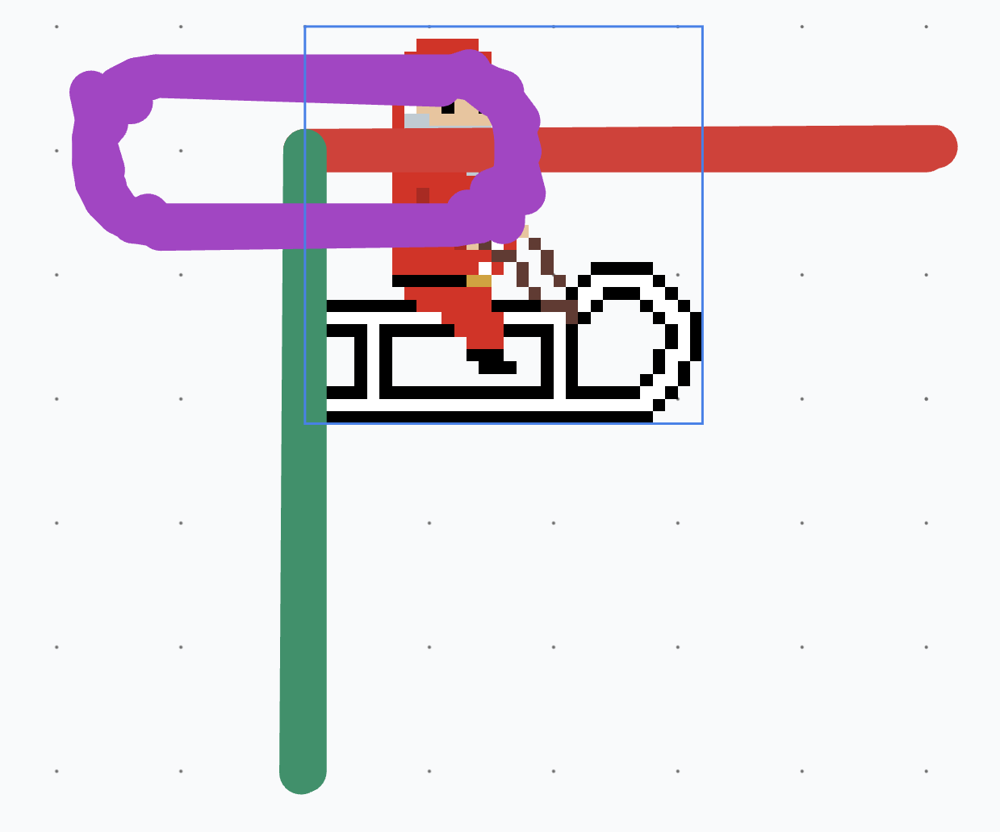
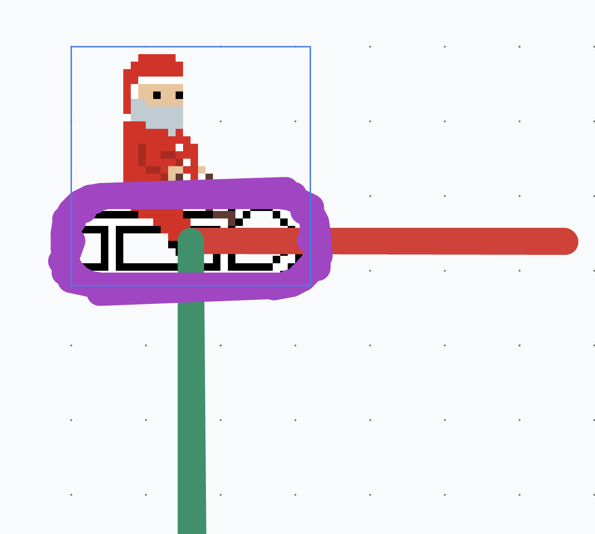
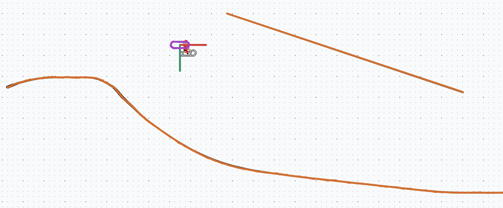
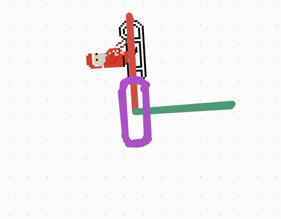
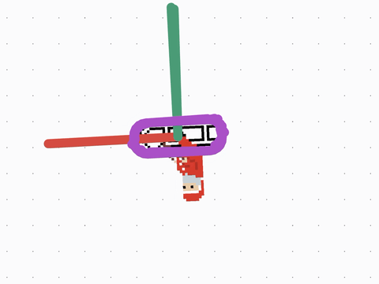
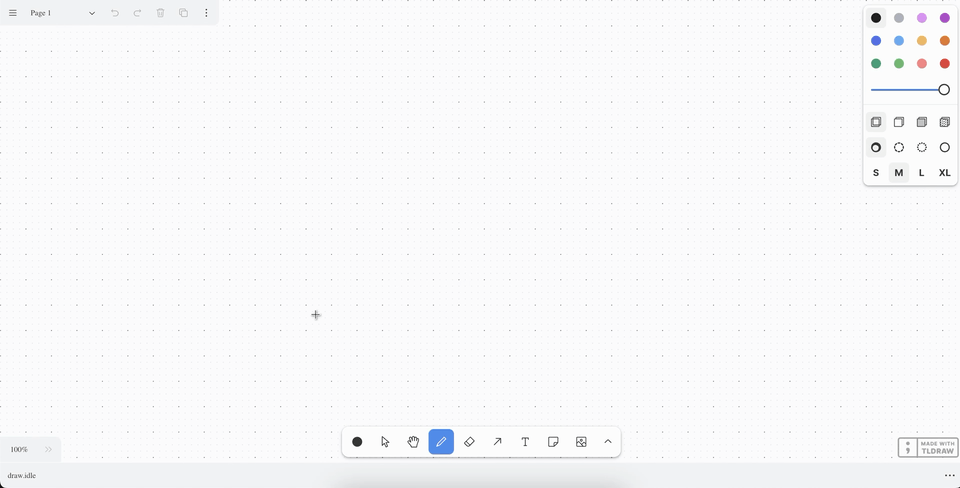

Tldraw Rider - Sled the Slopes Of Your Infinite Canvas
22 Dec 2024
I work with tldraw for my day job. One day, when I was tasked with a myriad of small bug fixes, I was looking at the tldraw canvas and I was reminded of a game I used to play back in school, Line Rider. The premise of the game is that there’s an entity on a sled and you have to draw lines for them to sled on. So I thought, “Hey, tldraw is perfect for this” which is how this became my weekend project this weekend.
The most up to date code can be found on the GitHub repo for this project.
Scoping
Since it’s a weekend project, I had to scope it so that I wouldn’t spend weeks on it trying to make it into a full fledged game, even though it was really an appealing thought. Maybe one day I’ll come back to it and expand on it, or add more features to it as another weekend project.
So the list of things I wanted:
- A custom sprite for the rider.
- Physics so that the rider slides across lines drawn with the “draw” and “line” tool.
- Ability to place the rider anywhere and sleds goes from there.
Choosing a Physics Engine
To have nice sledding physics, I wanted to use a physics engine. At first, I looked at matter.js. It has comprehensive documentation and a good amount of examples to go off of. But as I was looking for alternatives, I came across Rapier and it immediately caught my attention because it’s a WebAssembly module. The performance difference for a small project like this is basically non-existent but with the possibility of an unknown number of lines with an unknown number of points, I wanted to use the best tool for the job.
Also, I liked that Rapier is fully deterministic. Although there’s a low chance of me possibly clicking the exact same (x, y) coordinate on the tldraw canvas to drop the rider in the same spot every time, it makes it possible to create a replay feature in the future if I ever wanted to.
We can add Rapier by installing the package from npm:
npm install @dimforge/rapier2d
Note: That we installed rapier2d not rapier3d.
Creating the Sprite
For the sprite, I wanted to go with a pixel art style. I’ve always loved the style of pixel art but I’ve never completed a piece of pixel art prior to this. This time I was determiend though, tldraw rider needed a pixel art character that you just might feel bad about when flipping them over or hitting a wall.
I won’t go too much into the details. I recently purchased Aseprite so I started with a 32x32 blank canvas (32x32 is the limit of my artistic abilities while still having a good amount of detail). I started with the sled, using the Line Rider sled as inspiration. Then, for the character, I thought I would get into the holiday spirit and I chose to make a santa character. In the end, it ended up looking like:

A more ambitious vision was having a reindeer pulling the sled with a joint connecting the reindeer to santa but we’ll keep it simple for now. I was pretty proud of myself for my first completed pixel art sprite. It’s also something I really enjoyed making so I’ll try more pixel art projects in the future.
Note: If you’re reading this post around the time it was posted, tldraw.com got into the holiday spirit and there’s snow over the canvas. I created the santa sprite before I noticed this but it’s a happy surprise, it really ties in well together.
The Tldraw Rider Shape
I wanted to be able to have a tool on the toolbar that would select the rider shape, and you could click anywhere on the canvas to place it. When the shape is placed, we create the colliders on the spot. If another shape is placed, the previous colliders and shape are destroyed and we create them again.
Creating a custom shape in tldraw is fairly simple, especially for a temporary shape like this one where we don’t have to worry about versioning and migrations.
First, we have to define the type for our shape. There’s nothing special about it so it’s just going to be based off the base shape with a width and a height.
type ITldrawRiderShape = TLBaseShape<
"rider",
{
w: number;
h: number;
}
>;
While we’re on the topic of dimensions, we have to decide how many pixels are in a physics unit. The shapes on the canvas are going to be very large, dozens to hundreds of pixels, and if we create colliders that large, our simulation is going to run in slow motion. To solve this, we need to define how many pixels to a physics unit. When going from tldraw space to physics space, we need to divide by this unit and when going from physics space to tldraw space we need to multiply by this unit. I like to keep it simple so let’s just say that 1 physics unit is equal to 100 pixels. So if we had a shape that’s 100x100 pixels, it would be defined as a collider with a size of 1x1.
const PHYSICS_UNIT_TO_PX = 100;
Okay let’s get back to our shape. We have to create a class for it and define some basic properties. I’m not paste the full class since a lot of it is just boilerplate. The part to focus on is the component, which is what returns the the React component for our shape. Currently it’s just return a div with our image in the center.
export class TldrawRiderShapeUtil extends ShapeUtil<ITldrawRiderShape> {
/**
* Custom shape boilerplate here.
*
* See https://tldraw.dev/examples/shapes/tools/custom-config for more details.
*/
/**
* The render method - the React component that will be rendered for the
* shape. It takes the shape as an argument. `HTMLContainer` is just a
* `div` that's being used to wrap our shape. We can get the shape's
* bounds usinig our own `getGeometry` method.
*
* The contents of this can be treated as a React component. Any hooks
* can be used here.
*
* @param {ITldrawRiderShape} shape The shape.
*/
component(shape: ITldrawRiderShape) {
return (
<HTMLContainer
id={shape.id}
style={{
display: "flex",
flexDirection: "column",
alignItems: "center",
justifyContent: "center",
pointerEvents: "all",
}}
>
<img src={spriteURL} />
</HTMLContainer>
);
}
}
At this point if you create a tool for it and add it to the toolbar shown in the tldraw example for a custom shape and tool, you can place our santa sprite on the tldraw canvas, exciting!
The Physics World
Before we create any rigid bodies or colliders, let’s set up our Rapier world that will process our physics simulations.
Since Rapier is a WebAssembly module, it has to be loaded asynchronously. We can do this in a useEffect in our component:
useEffect(() => {
import("@dimforge/rapier2d").then((RAPIER) => {
// We have access to rapier here.
});
}, [shape.id]);
Note: I put shape.id in the dependencies list for the useEffect because we’ll need to reference the rider shape often. It should only be run once since the shape id will not change after it is created.
From this point forward, I will specify whether we are adding code to the physics context or outside of it.
One of the first things we have to do inside the physics context is set up our world. The world contains everything we need to run the physics simulation. We just have to initialize it with a gravity like so:
const gravity = {
x: 0.0,
y: 9.81,
};
const world = new RAPIER.World(gravity);
Note: gravity is defined as 9.81 instead of -9.81 because the y axis in tldraw increases as it goes down. If we had y: -9.81 our rider would appear to be defying gravity, which is cool but not for this project.
Before setting up the loop, let’s get the full rider shape. Since we only added shape.id to the useEffect’s dependencies, we need to get the shape by its id.
Note: We only added shape.id to the useEffect’s dependencies so that we don’t add the entire shape to the dependencies. The more simple we can keep the dependency array the better.
const riderShape = this.editor.getShape(shape.id) as ITldrawRiderShape;
if (!riderShape) return;
We cheat a little with TypeScript using as ITldrawRiderShape but that’s okay since we know exactly what this shape is.
After this, we need to set up our game loop. In here, every frame we step through the physics simualation and we’ll use the updated values to update the position of our rider in the canvas. For now let’s just set up the basic game loop.
Below where we created the world, we add:
const gameLoop = () => {
world.step();
requestAnimationFrame(gameLoop);
};
if (riderShape) gameLoop();
In the game loop we call world.step() to process another frame of the physics simulation. This will check collisions and recalculate transformations, rotations, etc. on the rigid body that we’ll attach to the rider.
We call requestAnimationFrame to run it in a loop and below we call gameLoop to kick start the loop.
Note: We check if a riderShape is present before starting the game loop because I’ve noticed that if I create a tool for this custom shape, the game loop will run before the rider has been added to the canvas.
Debug Lines
While adding the rigid body to the rider and adding colliders, it’s very helpful to see where they are positioned on the canvas, especially since we have to convert between tldraw space and physics space. For this, Rapier provides the ability to render debug shapes.
The example shown in the link above is for Pixi.js so we’ll have to adapt it slightly to work for tldraw.
First, while Pixi.js has a function to convert an array of normalized RGB values, PIXI.utils.rgb2hex, to a hex color value, we’ll have to calculate that ourselves. This is just a standard equation that we can find so let’s just define it as a utility function outside of our shape:
/**
* Takes in an array of normalized RGB values (0–1) and returns a hexadecimal
* color string.
*
* @param {[number,number,number]} normalizedRgb The normalized RGB values.
*
* @returns {string} The hexadecimal color string.
*/
export const rgbToHex = (normalizedRgb: [number, number, number]): string => {
// Scale the normalized values to 0–255 and convert to integers.
const scaledRgb = normalizedRgb.map((value) => Math.round(value * 255));
// Format as a hexadecimal string.
const hexColor = `#${scaledRgb
.map((value) => value.toString(16).padStart(2, "0"))
.join("")
.toUpperCase()}`;
return hexColor;
};
Also, while this returns a hex color value, tldraw expects colors to be one of the colors defined by them, like red, blue, etc. Through trial and error I found out the hex colors that Rapier uses for debug lines and I made an object to map the hex color value to the tldraw color value. I tried to match the hex color value as closely as possible but some colors were just too close together and there’s not enough variance in tldraw’s colors.
const HEX_TO_TLDRAW_COLOR: { [hex: string]: string } = {
"#800000": "red",
"#003300": "green",
"#990033": "violet",
"#CC6600": "orange",
"#1A0000": "yellow",
"#1F000A": "grey",
"#000A00": "black",
};
Before we get to writing the function, we need one last thing. Since debug lines are just vertices and colors, we don’t know what lines to keep and throw away between steps of the game loop, which means that we have to run this function every iteration of our loop. This isn’t performant (like at all) but it’s for debugging so it’s not a big deal. If we really wanted to optimize this we could do some clever tricks to memoize debug lines but maybe another time. Anyway, I say all this because we need a variable, defined outside of the shape and this debug function, to keep track of the shape ids of the debug lines. Every frame we’re going to delete the lines in this array, clear the array, then redraw the lines and add them to the array.
let debugLineIds: TLShapeId[] = [];
Ok we’re finally ready to create the function to draw the debug lines. I’ll paste the entire function and we’ll go through the parts.
const createDebugLines = (world: World, editor: Editor) => {
try {
debugLineIds.map((lineId) => editor.deleteShape(lineId));
debugLineIds = [];
const { vertices, colors } = world.debugRender();
for (let i = 0; i < vertices.length / 4; i += 1) {
const color = rgbToHex([
colors[i * 8],
colors[i * 8 + 1],
colors[i * 8 + 2],
]);
const shapeColor = HEX_TO_TLDRAW_COLOR[color];
if (!shapeColor) throw new Error(`Unknown color: ${color}`);
const id = createShapeId();
editor.createShape({
id,
type: "line",
props: {
color: shapeColor,
points: [
{
id: `a${i}`,
index: `a${i}`,
x: vertices[i * 4] * PHYSICS_UNIT_TO_PX,
y: vertices[i * 4 + 1] * PHYSICS_UNIT_TO_PX,
},
{
id: `a${i}`,
index: `a${i}`,
x: vertices[i * 4 + 2] * PHYSICS_UNIT_TO_PX,
y: vertices[i * 4 + 3] * PHYSICS_UNIT_TO_PX,
},
],
},
meta: {
isDebugLine: true,
},
});
debugLineIds = [...debugLineIds, id];
}
} catch (error) {
console.error(`Error creating debug lines: ${error}`);
}
};
- As mentioned before, we want to delete all of the lines from the previous render and reset the debug line ids array to be empty:
debugLineIds.map((lineId) => editor.deleteShape(lineId));
debugLineIds = [];
- Get the vertices and the colors to use for the lines from Rapier:
const { vertices, colors } = world.debugRender();
- Next, we loop through each set of vertices (we divide the length 4 because each line consists of a start and end x and y).
First, we get the get color to use for the line by converting the value to the hex color and then mapping it to our tldraw color.
Then, we create an id, outside of createShape so we can add it to our debug line ids, and then create the shape using the vertices, mapped from physics space to tldraw space. We also add a meta property, isDebugLine: true. So that when we iterate through the shapes on the canvas, we know what’s a Rapier debug line and what’s a line drawn by the us.
- Add the ids of the lines created for the debug lines to our array so that next iteration we can delete them from the canvas.
Now, at the bottom of our gameLoop function, before the call to requestAnimationFrame(gameLoop), add:
createDebugLines(world, this.editor);
Adding Physics to the Rider
Ok so now we have our rider shape, we have the physics world set up, and we can render debug lines so we can see our rigid body and colliders. Let’s attach a rigid body and a collider to the rider.
First, we have to create a dynamic rigid body, so that the rider is affected by physics, and move it to the position of where the shape is created:
const riderRigidBodyDesc = RAPIER.RigidBodyDesc.dynamic().setTranslation(
riderShape.x / PHYSICS_UNIT_TO_PX,
riderShape.y / PHYSICS_UNIT_TO_PX
);
const riderRigidBody = world.createRigidBody(riderRigidBodyDesc);
For the translation of the rigid body, we just set it to the position of the rider shape, making sure to convert from tldraw space to physics space.
Next is the collider for the rider. This one is a bit more hardcoded because we want a rounded collider just around the sled. You could argue that the collider should encompass santa but we want to avoid harm coming to our santa and also the collider is more rounded just around the sled.
We’re going to use a round cuboid collider so it’ll be a rectangle around our sled with the corners rounded:
const riderColliderDesc = RAPIER.ColliderDesc.roundCuboid(
12 / PHYSICS_UNIT_TO_PX,
1 / PHYSICS_UNIT_TO_PX,
0.05
)
.setTranslation(0, 0.1)
.setFriction(0)
.setFrictionCombineRule(RAPIER.CoefficientCombineRule.Min)
.setRestitution(0);
const riderCollider = world.createCollider(riderColliderDesc, riderRigidBody);
I mentioned that the values here would not be pretty. I just fined tuned them using the debug lines until I saw a collider I liked. We also set friction to 0 so that it slides like a well oiled sled and the restitution to 0 so that it doesn’t bounce off the lines.
Speaking of debug lines, if you place the rider on the canvas now, you should see the debug lines for the collder appear.

There’s actually an issue here though, the collider is not aligned with the sprite. You’ll notice that the center of the collider is aligned with the top left of the sprite. The pivot of Rapier and tldraw is off. To fix this, we just add half the dimensions of the sprite to the translation of the rigid body:
const riderRigidBodyDesc = RAPIER.RigidBodyDesc.dynamic().setTranslation(
(riderShape.x + riderShape.props.w / 2) / PHYSICS_UNIT_TO_PX,
(riderShape.y + riderShape.props.h / 2) / PHYSICS_UNIT_TO_PX
);
Now if you add the rider and look at the debug lines, it all lines up!

Creating Colliders For Lines
Next, we need to add colliders to lines drawn by the user so that our santa has something to sled on. We’re going to support both drawn lines and lines created with the line tool. To make it easier to handle these types of lines, and any future lines, let’s put this in a function outside of the shape. It’ll take the Rapier instance and the shape to create the collider for. If the shape is one we support (draw, line) then we’ll return the ColliderDesc for it. Otherwise, we’ll return undefined to indicate it’s not supported.
const createColliderDescForShape = (RAPIER, shape: TLShape): ColliderDesc | undefined => {
switch (shape.type) {
default:
return;
}
};
Let’s trackle the draw shape type first. The draw shape consists of a series of points that makes up the line. Luckily, Rapier has a polyline collider type that we can use for this. We just pass it a series of points. If we were more concerned about performance, we might try to use the heightfield but it would be less of an accurate line since it would have sharp points instead of smooth hills.
So the switch case for our draw shape looks like:
switch (shape.type) {
case "draw": {
const draw = shape as TLDrawShape;
return RAPIER.ColliderDesc.polyline(
new Float32Array(
draw.props.segments[0].points.flatMap((point) => [
(shape.x + point.x) / PHYSICS_UNIT_TO_PX,
(shape.y + point.y) / PHYSICS_UNIT_TO_PX,
])
)
)
.setFriction(0.5)
.setRestitution(1.0);
}
}
Note: With both of these shapes, we have to add the position of the point to the base position of the shape. The points on these lines start at (0, 0) at the position of the shape.
First we cheat TypeScript a little bit again with as TLDrawShape since we know it’s a draw shape. This gives us the typing for the shape’s props which is nice to have with more complicated shapes.
Then, we create the polyline collider. The polyline collider expects a Float32Array of x, y, x, y, etc. The draw shape has segments and search segment has x, y points. In the code above, I just always use segment[0]. I’ve personally not come across a situation where I had multiple segments. But since each point in a segment is a { x: number; y: number } object, and we just need a flat array, we use flatMap to just return the x and y number values. Then, we set friction to 0.5 so it acts like a ground terrain. You can tweak these friction and restitution values to change the speed and bounciness of the rider.
For the line shape, it’s even easier. We’ll be using Rapier’s segment collider which just takes a start and end point and creates a straight line, matching the line shape. It looks pretty similar to the draw shape from above but with just the start and end points:
switch (shape.type) {
case "line": {
const line = shape as TLLineShape;
const points = Object.keys(line.props.points).map(
(key) => line.props.points[key]
);
return RAPIER.ColliderDesc.segment(
new Vector2(
(line.x + points[0].x) / PHYSICS_UNIT_TO_PX,
(line.y + points[0].y) / PHYSICS_UNIT_TO_PX
),
new Vector2(
(line.x + points[1].x) / PHYSICS_UNIT_TO_PX,
(line.y + points[1].y) / PHYSICS_UNIT_TO_PX
)
)
.setFriction(0)
.setRestitution(0);
}
}
The points on the line are defined as keys on an object with key names that aren’t directly related to their indices so we put them into an array to make it easier. Again we add the points to the position of the shape and convert into physics space. For smooth lines like this, we set friction and restitution to 0 so it acts as ice.
Adding Colliders To Lines
Now that we can easily create colliders for shapes, we need to actually create them when the rider shape is placed on the screen. The following code is in the useEffect but outside of the game loop.
First though, let’s keep track of the handles of the colliders that we’re going to add just like we did with the player collider. This makes it much easier to reference them in the future. Unlike the rider though, we don’t know the exact shape id that the colliders are attached to so lets make it an object with the keys being shape ids and the values being the handles of the colliders.
let shapeColliderHandles: {
[shapeId: string]: number;
} = {};
Now we can get all of the shapes that have been drawn to the page:
const currentPageShapes = this.editor.getCurrentPageShapes();
Note: If I was optimizing this, I’d filter out culled shapes. I haven’t tried it but there’s a function on the editor, this.editor.getCulledShapes() and we should be able to use the results of this to filter out the page shapes above.
Next, we’ll go through each shape and attempt to create a shape for it. One of our constraints though is that only one rider can be on the screen at one. This is more performant, easier to debug and manage, and there’s only one santa in real life anyways. So while we’re looping through the shapes to add colliders to them, we’re also going to see if we need to delete any old riders or not.
First, let’s set up the loop:
let shapesToDelete: TLShapeId[] = [];
currentPageShapes.forEach((currentPageShape) => {
});
We’re going to add the shapes that should be deleted (which should just be old rider shapes) to the shapesToDelete array. Let’s tackle that part first.
if (currentPageShape.type === "rider") {
if (currentPageShape.id === shape.id) {
return;
} else {
shapesToDelete = [
...shapesToDelete,
currentPageShape.id,
];
}
}
The first condition currentPageShape.id === shape.id checks if the rider shape is the one that is newly created. If so, we don’t want to do anything. Otherwise, if there’s a rider shape with any other id, return it so it can be deleted.
Next, we’re going to check if the shape is a debug line or not. If so, we don’t do anything. If we didn’t have this check, we would create colliders for the debug lines, which is very much not performant.
if (currentPageShape.meta.isDebugLine) {
return;
}
Ok now we’re at the point where the shape is not a rider and is not a debug line so let’s try to create a collider for it using the function we created in the previous section.
const currentPageShapeColliderDesc = createColliderDescForShape(RAPIER, currentPageShape);
Ok I’ve been saying “create a collider” but really we’re just creating the description of the collider. If you remember, this function either returns the ColliderDesc if it’s a shape we support, or it returns undefined otherwise. So let’s handle both cases.
If it returns a ColliderDesc, then we want to actually create the collider and add it to the world, and our own object. Otherwise we’ll just log a warning that the shape is not supported.
if (currentPageShapeColliderDesc) {
const currentPageShapeCollider =
world.createCollider(
currentPageShapeColliderDesc
);
shapeColliderHandles = {
...shapeColliderHandles,
[currentPageShape.id]:
currentPageShapeCollider.handle,
};
} else {
console.warn(
`Shape type ${currentPageShape.type} is not supported.`
);
}
To wrap up this section, let’s delete our shapes that were returned from the loop.
shapesToDelete.forEach((shapeId) => {
this.editor.deleteShape(shapeId);
});
At this point you should be able to draw a line or use the line tool to create a line then add a rider to the canvas and you should see the debug lines for the terrain. If your frames start dropping, don’t worry about it too much. We won’t reliably be able to use these lines while actually playing the game since they can drastically reduce frames. Instead, we just want to use them to debug the positions of colliders on shapes and the rider but in limited context.

Deleting Colliders When Shapes Are Deleted
I’ll keep this section short, this is just in case the rider or one of the terrain lines is deleted while the simulation is running. We remove any physics entites on the shapes so clean up.
tldraw makes this easy with their side effects so we can create a side effect that runs after a shape is deleted and depending on the shape, we can remove the physics entities attached to it.
I’ll go ahead and paste the whole block. This goes after the loop we created above.
this.editor.sideEffects.registerAfterDeleteHandler(
"shape",
(deletedShape) => {
if (deletedShape.id === shape.id) {
world.removeCollider(riderCollider, true);
world.removeRigidBody(riderRigidBody);
return;
}
if (deletedShape.meta.isDebugLine) {
return;
}
if (deletedShape.id in shapeColliderHandles) {
const shapeCollider = world.getCollider(
shapeColliderHandles[deletedShape.id]
);
world.removeCollider(shapeCollider, false);
}
}
);
Basically, if the deleted shape is the rider, we remove the collider and rigid body, which we set to variables earlier. If the shape is a debug line we do nothing since it’s just a representation of a rigid body or collider and not one itself, and if it’s anything else we get the collider handle from our shape -> collider handle mapping and delete it.
Moving the Rider
Now that we’ve set up our physics world, we can finally move the rider based on the physics simulation.
In the game loop, after world.step(), we need to get our rider shape again so that we have access to its properties.
const rider = this.editor.getShape(
shape.id
) as ITldrawRiderShape;
if (!rider) return;
Then, get the rigid body’s latest position after stepping the physics simulation forward one frame.
const position = riderRigidBody.translation();
Next, we calculate the next position of the rider shape from this. We calculate this by taking the new position of the rigid body, adjusting for the difference in anchor points, and again converting from physics space to tldraw space.
const nextPosition = new Vector2(
(position.x - rider.props.w / 2 / PHYSICS_UNIT_TO_PX) * PHYSICS_UNIT_TO_PX,
(position.y - rider.props.h / 2 / PHYSICS_UNIT_TO_PX) * PHYSICS_UNIT_TO_PX
);
Note: Since this position will be applied to our rider shape, Vector2 is an import from tldraw.
Let’s apply this update to our shape.
this.editor.updateShape({
id: shape.id,
type: "rider",
x: nextPosition.x,
y: nextPosition.y,
});
Now we have basic physics working on the rider. If you create a line, and then place the rider above it, you should see the rider falling down due to gravity and then it skiing on the line. You’ll notice though that the rider doesn’t rotate to match the slope of the line, it just stays flat while skiing down. Let’s fix this.
Rotating the Rider
We can get the rotation of the rider’s rigid body with:
const newRotation = riderRigidBody.rotation();
Now, if you apply this to the updateShape we added above like:
this.editor.updateShape({
id: shape.id,
type: "rider",
x: nextPosition.x,
y: nextPosition.y,
rotation: newRotation,
});
and run the simulation, you might notice that it looks…bad. This is because if you rotate the shape like this, it rotates it based on the top left point of the shape, which is not what we expect. We want to rotate around the center point of the shape.

We can’’t do this in updateShape so if you added the rotation above, remove it now. Instead, tldraw has a editor.rotateShapesBy method that can be used to rotate shapes around any center point, defaulting to the center point of the shapes passed to it. If we just pass in our rider shape, it’ll rotate around the center point of the rider shape. As for parameters, it takes an array of shape ids to rotate (which we’ll just pass in our rider shape by) and the amount to rotate by in radians.
riderRigidBody.rotation(); returns us the current rotation, not the difference, but we can get the difference by subtracting the current rotation from it:
const rotationDiff = newRotation - rider.rotation;
Luckily, this is already in radians so we can just pass it to rotateShapesBy:
this.editor.rotateShapesBy([shape.id], rotationDiff);
If you look at the simulation now, it might almost seem correct. There’s still one last rotation issue, the x and y position of the rider shape changes as it rotates because the position is based on the top left corner of the rider shape. This top left corner changes positions as it rotates. To really see the issue, set the gravity of the world to 0 and add a small torque impulse to the rigid body just outside of the game loop to make it rotate on the spot.
riderRigidBody.applyTorqueImpulse(0.0001, true);
This will cause the rigid body to start spinning and with debug lines on you can see the rider shape getting out of sync with the collider. To fix this, we need another utility function that calculates the coordinates of the rotated top left corner of the shape around its center.
As input, we’ll need the center position of the shape, the dimensions of the shape, and the rotation of the shape in radians.
export const getRotatedTopLeftForRectangle = (
cx: number,
cy: number,
width: number,
height: number,
angle: number
): { x: number; y: number } => {
};
Note: As the name implies, this can be used for any rectangular shape.
First, we get the half width and height based on the dimensions passed in and use it to determine the position of the top left point of the shape.
const halfWidth = width / 2;
const halfHeight = height / 2;
const dx = -halfWidth;
const dy = -halfHeight;
Next, we apply the rotation matrix to the offsets.
const dxRot = dx * Math.cos(angle) - dy * Math.sin(angle);
const dyRot = dx * Math.sin(angle) + dy * Math.cos(angle);
-
dxRotrepresents the x-coordinate offset after rotating. -
dx * Math.cos(angle)projects the horizontal offsetdxonto the rotated x-axis. -
-dy * Math.sin(angle)projects the vertical offsetdyonto the rotated x-axis, with the sign changed because the y-axis rotates counterclockwise. -
dyRotrepresents the y-coordinate offset after rotating. -
dx * Math.sin(angle)projects the horizontal offsetdxonto the rotated y-axis. -
dy * Math.cos(angle)projects the vertical offsetdyonto the rotated y-axis.
This part just calculates how the top left corner of the shape shifts due to the rotation of the shape.
const x = cx + dxRot;
const y = cy + dyRot;
return { x, y };
Lastly, we add the rotated offsets to the center position of the shape to compute the new absolute position of the top left corner of the shape and return it.
Now let’s use this in our rotation.
After calculating nextPosition, lets calculate the rotatedTopLeftPosition:
const rotatedTopLeftPosition = getRotatedTopLeftForRectangle(
nextPosition.x + rider.props.w / 2,
nextPosition.y + rider.props.h / 2,
rider.props.w,
rider.props.h,
rider.rotation
);
Now when updating the shape with this.editor.updateShape, for the x and y values, use rotatedTopLeftPosition.x and rotatedTopLeftPosition.y instead of nextPosition.x and nextPosition.y like:
this.editor.updateShape({
id: shape.id,
type: "rider",
x: rotatedTopLeftPosition.x,
y: rotatedTopLeftPosition.y,
});
Now if you look at your spinning santa, the shape and collider should be in sync. If you add the gravity back in and remove the torque impulse, you should see your rider correctly rotating to match the slope of the line.

There’s also currently an open issue in the tldraw GitHub repo where a selected shape that’s continuously rotating causes a drop in frames per second. To remedy this, add this line outside of the game loop where we get the rider shape by its id.
this.editor.deselect(shape.id);
Let’s Test It Out
That’s it for now, let’s see what we’ve come up with!

Wow that was a sick flip.
Next Steps
If I wanted to continue with this, some other ideas I would pursue would be:
- Have the camera follow the rider.
- Don’t create colliders for culled shapes. Create the colliders for shapes as they come into view.
- Create colliders for other tldraw shape types such as geo, arrows, etc. with different physics properties.
- A reindeer pulling the sled with a joint attached to the sled.
- Improve the collider for the rider. Currently the collider is just around the sled and not santa.
- Particle effects for fun.
- Add the ability to place checkpoints or a finish line.